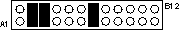

Operating Documentation
Direction 5114045-800, Rev# 10
LightSpeed 4.X Service Information (Advanced)
Operating Documentation |
GE specific settings for the Sony SMO-F551-SD MOD drive are shown in Illustration 1. See Table 1 for descriptions of the Functional Switch connectors.
Illustration 1: Sony MOD drive functional switch - GE specific settings

Illustration 2: Sony SMO-F551-SD (MOD) drive connectors (rear view)

Table 1: Functional Switch Connector Pin Assignments (Sony MOD)
| A1 | SCSI ID2 | B1 | GND |
| A2 | SCSI ID1 | B2 | GND |
| A3 | SCSI ID0 | B3 | GND |
| A4 | Disable SCSI Parity | B4 | GND |
| A5 | Disable Write Cache | B5* | Reserved |
| A6 | Disable AUto Spin-up | B6* | Reserved |
| A7 | Force Verify for Write command | B7* | Reserved |
| A8 | Disable Manual Eject | B8* | Reserved |
| A9 | Enable Fast SCSI | B9* | Reserved |
| A10 | Device Type | B10* | Reserved |
| A11 | Enable Termination | B11 | GND |
| A12 | Terminator Power | B12 | Terminator Power Source |
| * This pin is NOT directly connected to the GND. Do not use this pin as GND. SMO-F551-SD drives the signal to GND level depending on the functional switch setting. Otherwise, the signal is not driven to GND level. | |||